无限莫尔-库仑介质中的圆柱孔
问题描述
注意
要在 3DEC 中查看此项目，请使用菜单命令 。选择“3DEC/ VerificationProblems/ Elastic_Hole”，然后选择“ElasticHole.prj”进行加载。所用的主数据文件（main data files）显示在本示例的末尾。所有数据文件都可在该项目中找到。
本问题涉及确定承受压缩性各向同性远场应力的无限弹塑性介质中圆柱孔周围的应力与位移。该问题的目标是检验 3DEC 中的塑性计算。假定介质为线弹性、理想塑性。采用莫尔-库仑准则作为塑性极限；材料按相关联流动法则发生塑性变形（即剪胀角等于内摩擦角）。
对材料赋予以下属性：
密度（\(\rho\)）：2600 kg/m3
剪切模量（\(G\)）：2.8 GPa
体积模量（\(K\)）：3.9 GPa
黏聚力（\(c\)）：3.45 MPa
内摩擦角（\(\phi\)）：30°
剪胀角（\(\psi\)）：30°
各向同性远场应力等于 30 MPa。孔的半径为 1 m，并假定其远小于圆柱的长度。（这样便可采用平面应变解进行对比。）
解析解
无限莫尔-库仑材料中圆柱孔（图 1（Figure 1））周围塑性区的半径 \(R_o\) 由 Salençon（1969）导出的解析解给出：
其中：
\(a\) = 孔的半径；
\(K_p\) = \((1 + \sin \phi)/ (1 -\sin \phi)\);
\(q\) = \(2c \tan (45 + \phi /2)\);
\(P_o\) = 初始地应力；以及
\(P_i\) = 内压力。
根据该解，弹性/塑性交界面处的径向应力为
塑性区中的应力为：
其中 \(r\) 为到孔中心的距离；而弹性区中的应力为：
弹性区中的位移为
而在塑性区中为：
其中：
\(K_{ps}\) = \((1 + \sin \psi)/(1 − \sin \psi)\) ;
\(\psi\) = 剪胀角；以及
\(\nu\) = 泊松比。
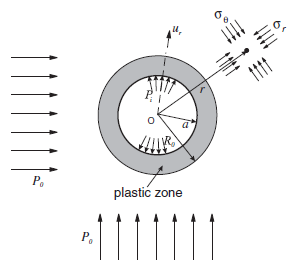
图 1：无限莫尔-库仑介质中的圆柱孔。
3DEC 模型
用于该分析的 3DEC 模型几何如图 2（Figure 2）所示。模型在 \(x\) 轴方向受约束，因此只能在 \(yz\) 平面内运动（平面应变条件）。模型由 900 个以放射状排列的已连接块体组成。边界选在距孔中心 10 m 处（即五个孔径）。该问题采用三种不同类型的网格划分求解。第一种情况下，采用混合离散化（hex）网格划分，将 900 个块体离散为 9000 个网格单元。（弹塑性问题的精确解所需的网格比线弹性问题的模拟所需的网格更细。）图 3（Figure 3）显示了该情况下块体和网格单元的几何。（每个块体有一个 hex 网格单元——即两组相互重叠的 5 个四面体。）第二种情况下，将 900 个块体离散为 50,900 个“regular”四面体网格单元。模型一侧的网格单元几何如图 4（Figure 4）所示。在所有情况下，块体均为连接状态（即块体之间的不连续面对模型的变形没有影响）。第三种情况下，将 900 个块体离散为 1096 个高阶网格单元。模型一侧的网格单元几何如图 5（Figure 5）所示。
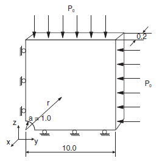
图 2：用于分析莫尔-库仑介质中圆柱孔的 3DEC 模型几何。

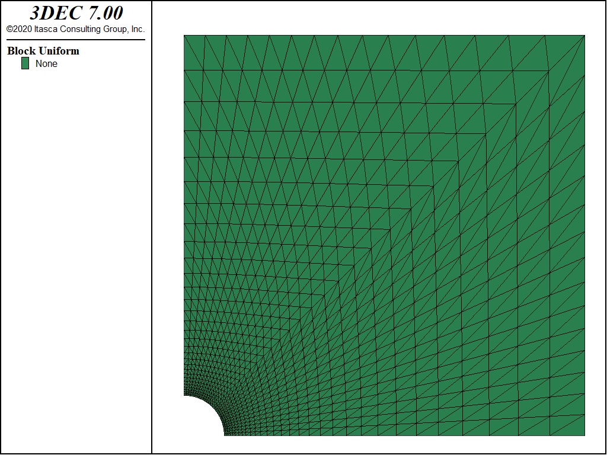
图 3：3DEC 模型中的块体与“hex”网格单元。

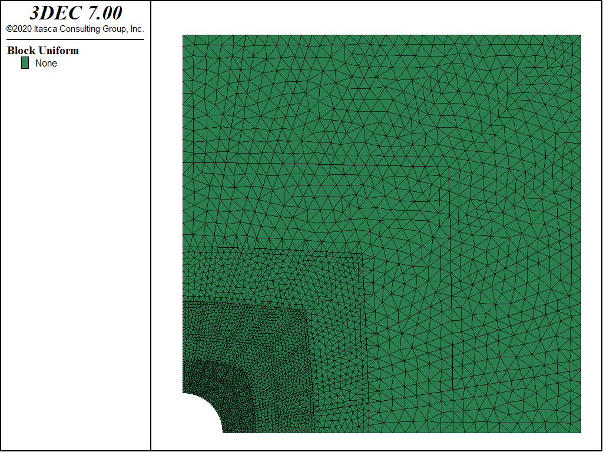
图 4：3DEC 模型中的四面体网格单元。

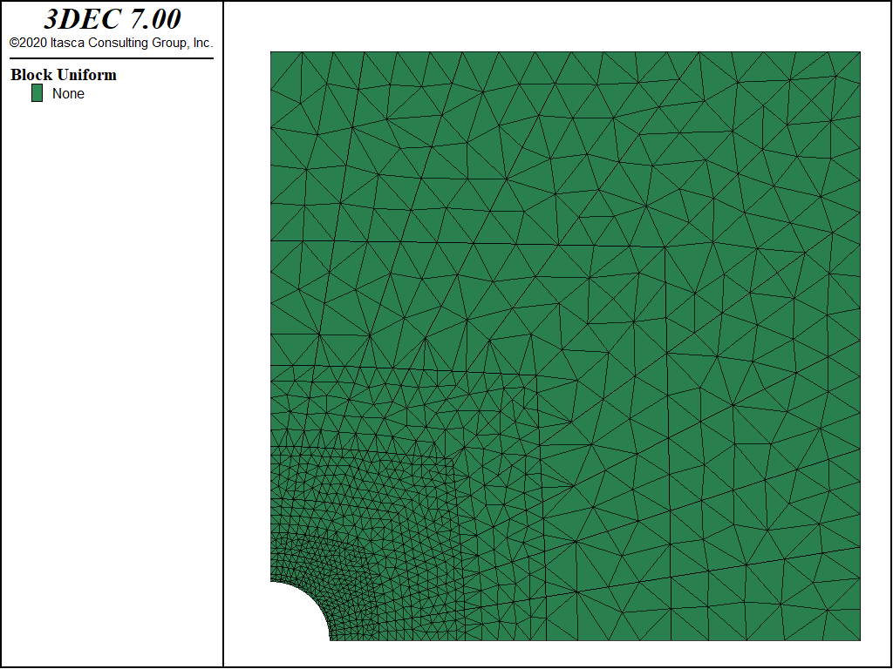
图 5：3DEC 模型中的高阶四面体网格单元。
结果与讨论
由于该问题为轴对称问题，所有结果均以距洞室中心的距离函数形式给出。图 6（Figures 6）和7将采用 hex 网格划分的 3DEC 结果与解析解进行对比。（径向位移的对比见图 6（Figure 6）；径向与切向应力的对比见图 7（Figure 7）。）图中显示两者结果吻合极好。注意图 7（Figure 7）中绘出的 3DEC 应力不是四面体网格单元的应力，而是将四面体应力在 hex 网格单元层面上平均后得到的应力。（即使在 hex 网格划分的情况下，3DEC 中的应力仍存储在四面体网格单元中。Quad 网格单元应力（即在 hex 网格单元层面上的平均应力）仅在计算速度与应力增量时计算。）使用 FISH 函数计算平均应力（见“mchole.fis”文件（“mchole.fis”））。
使用四面体网格划分的 3DEC 结果与解析解在图 8（Figures 8）和9中进行对比。图 8（Figure 8）中位移的吻合极好。数值结果仅在远场边界附近偏离解析解。（该误差是数值模型尺寸有限和边界条件近似所致。）图 9（Figure 9）中的应力结果显示塑性区存在较大的数值离散。对于位移采用线性近似（或应变与应力采用常数近似）的四面体网格单元（或二维中的三角形网格单元）而言，这种结果是预期行为。混合离散化是用于改善弹塑性计算中四面体（或三角形）网格单元性能的方法，在 3DEC 中通过 hex 网格划分实现。使用高阶四面体网格单元的 3DEC 结果与解析解在图 10（Figures 10）和11中进行对比。图 10（Figure 10）中位移的吻合极好。图 11（Figure 11）中的应力结果几乎与使用混合离散化得到的结果一样好。这些结果所用的单元数量仅为其他方法所需数量的一小部分。不同网格划分方法具有以下缺点：
- Quad 网格划分不能用于任意形状块体的离散化。
- 对于弹塑性问题，用四面体网格单元计算得到的应力场并不光滑。

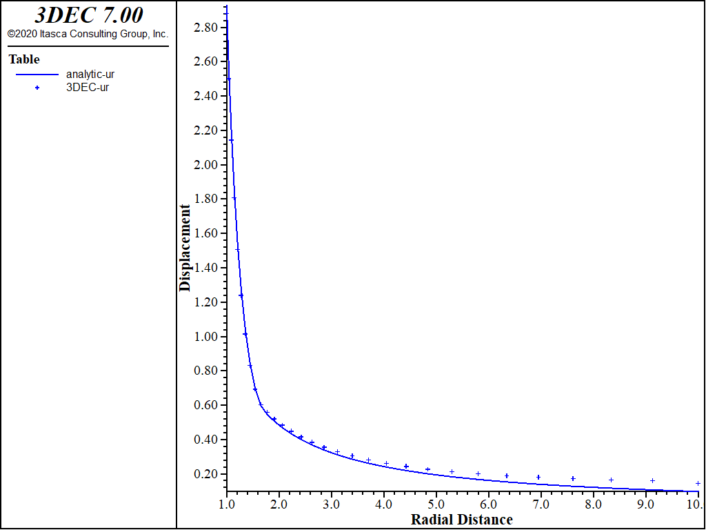
图 6：径向位移随半径变化的对比。

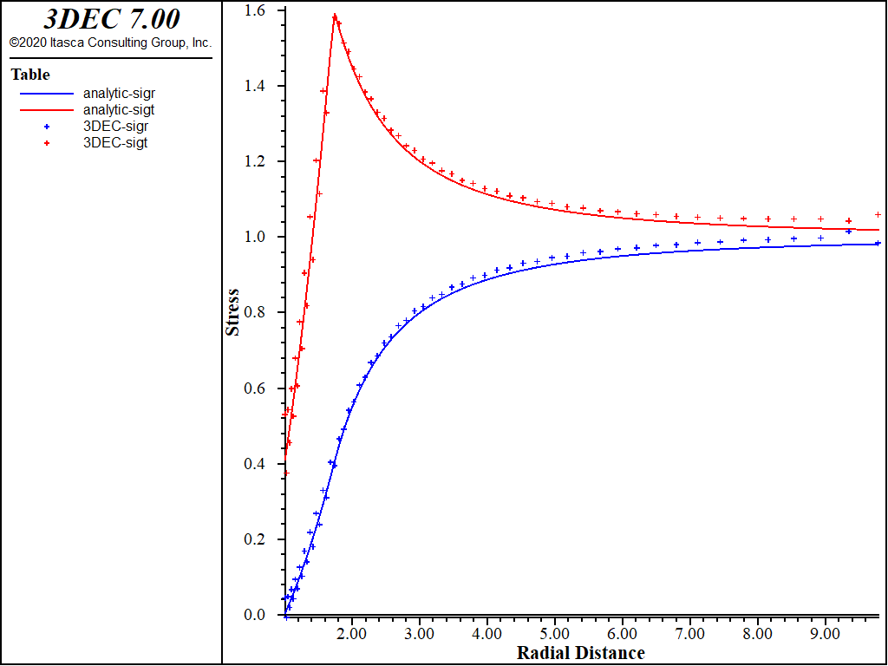
图 7：径向与切向正应力随半径变化的对比。

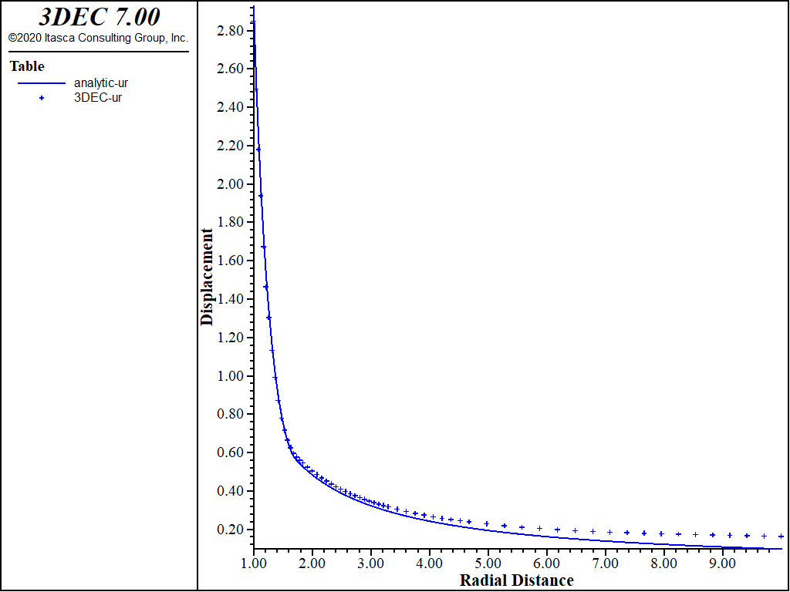
图 8：使用四面体网格单元时径向位移随半径变化的对比。

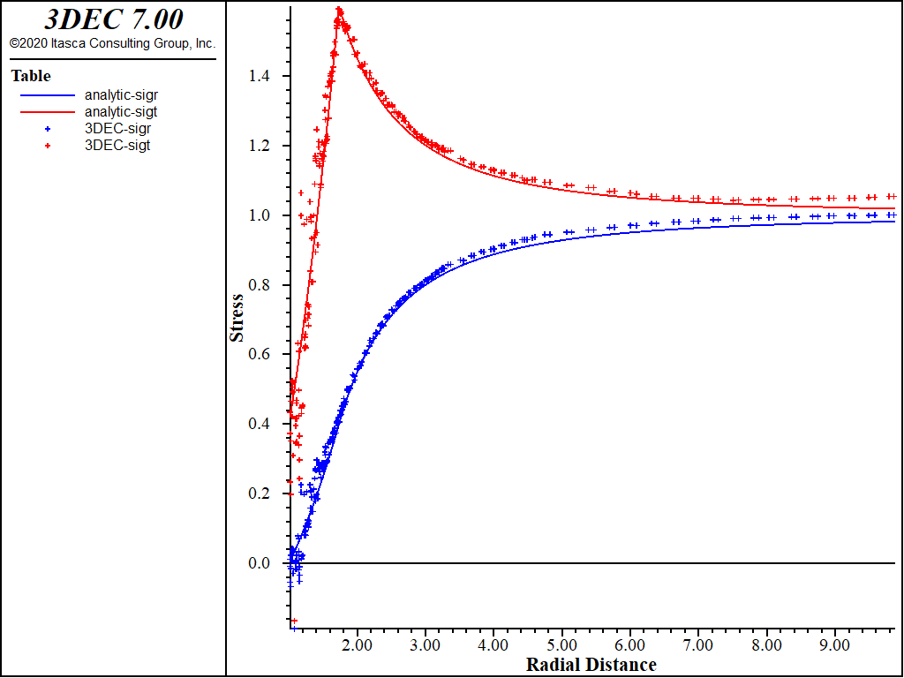
图 9：使用四面体网格单元时径向与切向正应力随半径变化的对比。

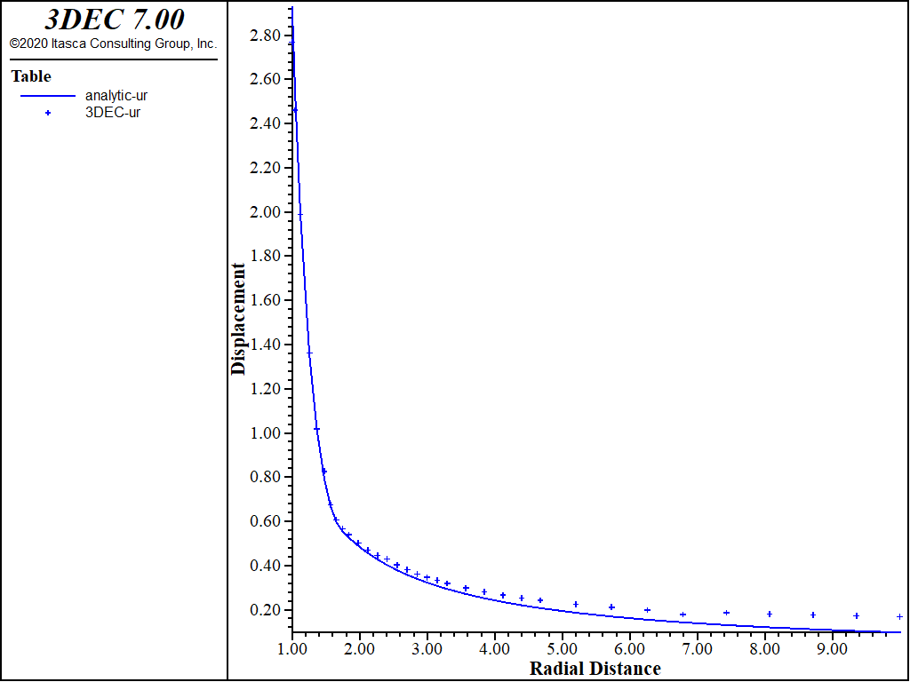
图 10：使用高阶四面体网格单元时径向位移随半径变化的对比。

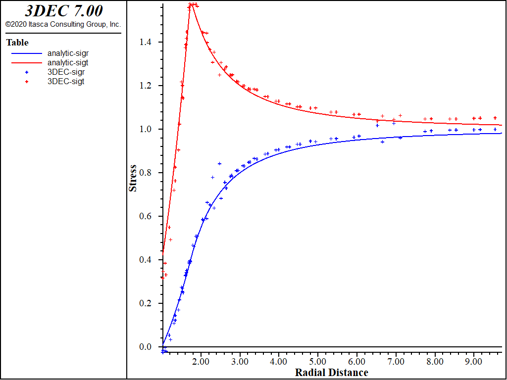
图 11：使用高阶四面体网格单元时径向与切向正应力随半径变化的对比
参考文献
Salençon, J.“Contraction Quas-Statique D’une Cauite a Symetric Spherique Ou Cylindrique Dans Un Milieu Elastoplastique”，Annales Des Ports Et Chaussees，第 4 卷，第 231-236 页（1969）。
数据文件
mchole-hex.dat
;==========================================================================
; 验证试验——采用 3DEC 模拟无限大、
; 各向同性、均质的 Mohr-Coulomb 介质
; 四边形网格划分
; 采用 Mohr-Coulomb 模型的块体
;
;==========================================================================
model new
model large-strain off
block create tunnel dip 0 dip-direction 0 radius 1 length 0 0.2 ...
blocks-axial 1 blocks-radial 30 blocks-tangential 15 ...
boundary 9 radius-ratio 1.07
block delete range cylinder end-1 0 0 0 end-2 0 1 0 radius 0 1
block delete range plane dip 0 dip-direction 0 below
block delete range plane dip 90 dip-direction 90 below
block join on
;
; --- 块体网格划分 ---
;
block zone generate hexahedra divisions 1 1 1
;
; --- 材料参数 ---
;
block zone cmodel assign mohr-coulomb
block zone property bulk 3.9e9 shear 2.8e9 density 2600
block zone property cohesion 3.45e6 tension 1e7 friction 30 dilation 30
;
; --- 边界条件 ---
block face apply stress -30e6 -30e6 -30e6 0 0 0 range position-x 10
block face apply stress -30e6 -30e6 -30e6 0 0 0 range position-z 10
block gridpoint apply velocity-x 0 range position-x 0
block gridpoint apply velocity-y 0 range position-y 0
block gridpoint apply velocity-y 0 range position-y 0.2
block gridpoint apply velocity-z 0 range position-z 0
;
; --- 初始条件 ---
;
block insitu stress -30e6 -30e6 -30e6 0 0 0
;
model history mechanical unbalanced-maximum
;
model solve
program call 'mchole.fis'
model save 'mchole-hex'
;
program return
mchole-tet.dat
;==========================================================================
; 验证试验——采用 3DEC 模拟无限大、
; 各向同性、均质的 Mohr-Coulomb 介质
; 四面体网格划分
; 采用 Mohr-Coulomb 模型的块体
;
;==========================================================================
model new
model large-strain off
model random 10000
block create tunnel dip 0 dip-direction 0 radius 1 length 0 0.2 ...
blocks-axial 1 blocks-radial 10 blocks-tangential 5 ...
boundary 9 radius-ratio 1.4
block delete range cylinder end-1 0 0 0 end-2 0 1 0 radius 0 1
block delete range plane dip 0 dip-direction 0 below
block delete range plane dip 90 dip-direction 90 below
block join on
;
; --- 块体网格划分 ---
;
block zone generate edgelength 0.05 range position-x 0.0 1.7 position-z 0.0 1.7
block zone generate edgelength 0.08 range position-x 0.0 2.9 position-z 0.0 2.9
block zone generate edgelength 0.15 range position-x 0.0 5.3 position-z 0.0 5.3
block zone generate edgelength 0.30
;
; --- 材料参数 ---
;
block zone cmodel assign mohr-coulomb
block zone property bulk 3.9e9 shea 2.8e9 density 2600
block zone property cohesion 3.45e6 tension 1e7 friction 30 dilation 30
;
; --- 边界条件 ---
block face apply stress -30e6 -30e6 -30e6 0 0 0 range position-x 10
block face apply stress -30e6 -30e6 -30e6 0 0 0 range position-z 10
block gridpoint apply velocity-x 0 range position-x 0
block gridpoint apply velocity-y 0 range position-y 0
block gridpoint apply velocity-y 0 range position-y 0.2
block gridpoint apply velocity-z 0 range position-z 0
;
; --- 初始条件 ---
;
block insitu stress -30e6 -30e6 -30e6 0 0 0
;
model history mechanical unbalanced-maximum
model solve
program call 'mchole.fis'
model save 'mchole-tet'
;
program return
mchole-ho.dat
;==========================================================================
; 验证试验——采用 3DEC 模拟无限大、
; 各向同性、均质的 Mohr-Coulomb 介质
; 高阶四面体网格划分
; 采用 Mohr-Coulomb 模型的块体
;
;==========================================================================
model new
model large-strain off
model config highorder
block create tunnel dip 0 dip-direction 0 radius 1 length 0 0.2 ...
blocks-axial 1 blocks-radial 10 blocks-tangential 5 ...
boundary 9 radius-ratio 1.4
block delete range cylinder end-1 0 0 0 end-2 0 1 0 radius 0 1
block delete range plane dip 0 dip-direction 0 below
block delete range plane dip 90 dip-direction 90 below
block join on
;
; --- 块体网格划分 ---
;
block zone generate edgelength 0.3 range position-x 0.0 1.7 position-z 0.0 1.7
block zone generate edgelength 0.6 range position-x 0.0 2.9 position-z 0.0 2.9
block zone generate edgelength 0.8 range position-x 0.0 5.3 position-z 0.0 5.3
block zone generate edgelength 1
block zone generate high-order-tetra
;
; --- 材料参数 ---
;
block zone cmodel assign mohr-coulomb
block zone property bulk 3.9e9 shear 2.8e9 density 2600
block zone property cohesion 3.45e6 tension 1e7 friction 30 dilation 30
;
; --- 边界条件 ---
block face apply stress -30e6 -30e6 -30e6 0 0 0 range position-x 10
block face apply stress -30e6 -30e6 -30e6 0 0 0 range position-z 10
block gridpoint apply velocity-x 0 range position-x 0
block gridpoint apply velocity-y 0 range position-y 0
block gridpoint apply velocity-y 0 range position-y 0.2
block gridpoint apply velocity-z 0 range position-z 0
;
; --- 初始条件 ---
;
block insitu stress -30e6 -30e6 -30e6 0 0 0
;
model history mechanical unbalanced-maximum
;
model solve
program call 'mchole.fis'
model save 'mchole-ho'
;
program return
mchole-nmd.dat
;==========================================================================
; 验证试验——采用 3DEC 模拟无限大、
; 各向同性、均质的 Mohr-Coulomb 介质
; 节点混合离散网格划分
; 采用 Mohr-Coulomb 模型的块体
;
;==========================================================================
model new
model large-strain off
block create tunnel dip 0 dip-direction 0 radius 1 length 0 0.2 ...
blocks-axial 1 blocks-radial 10 blocks-tangential 5 ...
boundary 9 radius-ratio 1.4
block delete range cylinder end-1 0 0 0 end-2 0 1 0 radius 0 1
block delete range plane dip 0 dip-direction 0 below
block delete range plane dip 90 dip-direction 90 below
block join on
;
; --- 块体网格划分 ---
;
block zone generate edgelength 0.1 range position-x 0.0 1.7 position-z 0.0 1.7
block zone generate edgelength 0.16 range position-x 0.0 2.9 position-z 0.0 2.9
block zone generate edgelength 0.3 range position-x 0.0 5.3 position-z 0.0 5.3
block zone generate edgelength 0.6
;
; --- 材料参数 ---
;
block zone cmodel assign mohr-coulomb
block zone property bulk 3.9e9 shear 2.8e9 density 2600
block zone property cohesion 3.45e6 tension 1e7 friction 30 dilation 30
block zone nodal-mixed-discretization on
;
; --- 边界条件 ---
block face apply stress -30e6 -30e6 -30e6 0 0 0 range position-x 10
block face apply stress -30e6 -30e6 -30e6 0 0 0 range position-z 10
block gridpoint apply velocity-x 0 range position-x 0
block gridpoint apply velocity-y 0 range position-y 0
block gridpoint apply velocity-y 0 range position-y 0.2
block gridpoint apply velocity-z 0 range position-z 0
;
; --- 初始条件 ---
;
block insitu stress -30e6 -30e6 -30e6 0 0 0
;
model history mechanical unbalanced-maximum
model solve
program call 'mchole.fis'
model save 'mchole-nmd'
program return
mchole.fis
;---------------------------------------------------------------------
; Salençon 问题的解析解和数值解处理
;
; nastr，存储以下内容
; 表 1：解析值 rad/a -sigr/p0
; 表 2：解析值 rad/a -sigt/p0
; 表 3：数值结果 rad/a -sigr/p0
; 取最接近 x 轴的网格单元形心处
; 表 4：数值结果 rad/a -sigt/p0
; 取最接近 x 轴的网格单元形心处
;
; 并在整个网格中计算
; errsr：-sigr/p0 的平均百分比误差
; errst：-sigt/p0 的平均百分比误差
;
; nadis，存储以下内容
; 表 5：解析值 rad/a -ur/a
; 表 6：x 轴上网格点处的数值结果 rad/a -ur/a
;
; 并在整个网格中计算
; errd：位移大小的平均百分比误差
;---------------------------------------------------------------------
fish automatic-create off
;
;--- 读取材料参数（黏聚力、摩擦角）和网格信息 ---
fish define const
global po = 30.0e6 ; 远场应力
global kp
global kpm1
global cqk
global sre
global ro
global kpsp1
global xi1
global xi2
global xi3
global coe
; 材料参数
local cco = 3.45e6
local cfi = 30.0*math.degrad
local cdi = 30.0*math.degrad
local bm = 3.3e9
local sm = 2.8e9
local nu = (3.*bm-2.*sm)/(6.*bm+2.*sm)
kp = (1.+math.sin(cfi))/(1.-math.sin(cfi))
kpm1 = kp - 1
local cq = 2.*cco*math.cos(cfi)/((1.0-math.sin(cfi))*po)
cqk = cq/(kp-1.)
sre = (2.-cq)/(kp+1.)
ro = (2.*(1.+cqk)/((kp+1.)*cqk))^(1./kpm1)
local kps = (1.+math.sin(cdi))/(1.-math.sin(cdi))
kpsp1 = kps+1
xi1 = (2.*nu-1.)*(1.+cqk)
xi2 = ((1.-nu)*(kp^2-1.)/(kp+kps))*cqk*ro^kpm1
xi3 = ((1.-nu)*(kp*kps+1)/(kp+kps)-nu)*cqk
coe = po/(2.*sm)
end
; =================================================
; 应力
; =================================================
fish define nastr
local numrad = 0
local tab1 = table.get(1)
local tab2 = table.get(2)
local tab3 = table.get(3)
local tab4 = table.get(4)
table.label(tab1) = 'analytic-sigr'
table.label(tab2) = 'analytic-sigt'
table.label(tab3) = '3DEC-sigr'
table.label(tab4) = '3DEC-sigt'
global errsr
global errst
errsr = 0.0
errst = 0.0
loop foreach local iz_ block.zone.list
local mark = 0
local igp
loop igp (1,4)
local gpind = block.zone.gp(iz_,igp)
if block.gp.pos.z(gpind) < 0.001 then
mark = mark + 1
end_if
end_loop
local rad = math.sqrt(block.zone.pos.x(iz_)^2 + ...
block.zone.pos.z(iz_)^2)
local theta_ = math.atan2(block.zone.pos.z(iz_),block.zone.pos.x(iz_))
if rad < ro then
local aux1 = rad^kpm1
local sigre = -cqk*(1.-aux1)
local sigte = -cqk*(1.-kp*aux1)
else
aux1 = (1.-sre)*(ro/rad)^2
sigre = 1. - aux1
sigte = 1. + aux1
end_if
local stemp1 = 0.5*(block.zone.stress.xx(iz_) + ...
block.zone.stress.zz(iz_))
local stemp2 = 0.5*(block.zone.stress.xx(iz_) - ...
block.zone.stress.zz(iz_))
local stemp3 = block.zone.stress.xz(iz_)*math.sin(2.0*theta_)
local sigr = -(stemp1 + stemp2*math.cos(2.0*theta_)+stemp3)/po
local sigt = -(stemp1 - stemp2*math.cos(2.0*theta_)-stemp3)/po
if mark > 2
numrad = numrad + 1
table(tab1,rad) = sigre
table(tab2,rad) = sigte
table(tab3,rad) = sigr
table(tab4,rad) = sigt
end_if
local err = math.abs(sigr - sigre)
errsr = errsr + err
err = math.abs(sigt - sigte)
errst = errst + err
end_loop
errsr = errsr * 100. / block.zone.num
errst = errst * 100. / block.zone.num
end
; =================================================
; 位移
; =================================================
fish define nadis
global numrad
numrad = 0
local tab5 = table.get(5)
local tab6 = table.get(6)
table.label(tab5) = 'analytic-ur'
table.label(tab6) = '3DEC-ur'
local rad = 1.
local dism = coe*rad*(xi1+xi2*(ro/rad)^kpsp1+xi3*rad^kpm1)
global errd
errd = 0.0
loop foreach local igp_ block.gp.list
local mark = 0
if block.gp.pos.z(igp_) < 0.001 then
if block.gp.pos.y(igp_) < 0.001 then
mark = 1
end_if
end_if
rad = math.sqrt(block.gp.pos.x(igp_)^2 + block.gp.pos.z(igp_)^2)
if rad < ro then
local dise = coe*rad*(xi1+xi2*(ro/rad)^kpsp1+xi3*rad^kpm1)
else
dise = coe*(1.-sre)*ro^2/rad
end_if
local dis = math.sqrt(block.gp.disp.x(igp_)^2 + ...
block.gp.disp.z(igp_)^2)
local err = math.abs(dis - dise)
errd = errd + err
if mark = 1 then
numrad = numrad + 1
table(tab5,rad) = 100*dise
table(tab6,rad) = 100*dis
end_if
end_loop
errd = errd * 100. / (dism * block.zone.num)
end
;
[const]
[nastr]
[nadis]
;
fish list [numrad]
fish list [errsr]
fish list [errst]
fish list [errd]
fish automatic-create on
; 文件结束
⇐ Cylindrical Hole in an Infinite Elastic Medium | Rough Square Footing on a Cohesive Frictionless Material ⇒
| 这些内容对您有帮助吗？… 版权与免责声明 |
FLAC3D © 2019, Itasca | 原文更新于 2020 年 10 月 8 日 |